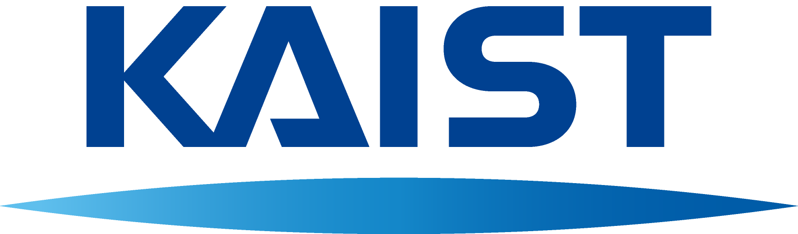
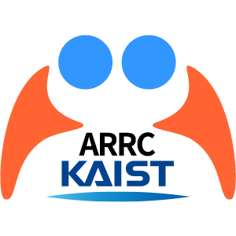

Research Center
KAIST 증강현실연구센터 · ARRC
2026–2027 WINTER · SYMBIOTIC AIR4BTS × AI GLASSES × AR/XR
Symbiotic AIR4BTS Research Talent Program
경험을 포착하고, 더 나은 경험으로 다시 증강하다
Evidence becomes models and XR assets. They adapt to new contexts. People and AI learn together.
이 프로그램은 AI와 채팅하는 일이 아니라, 같은 공간에서 두 사람이 마주 보고 말하고 과업을 수행하는 실제 경험을 연구의 출발점으로 삼습니다. AI는 대화를 대신하지 않고, AIR Glasses와 멀티모달 센서로 관찰 가능한 경험의 증거를 포착합니다. 이를 경험모델과 XR 자산으로 구조화해 새로운 사람·공간·시간·과업의 맥락에서 다시 도움이 되도록 설계·검증합니다. 사람은 대화와 결정을 주도하며, 수행 결과와 동의한 피드백은 다음 지원을 더 적절하게 만듭니다.
00센터 연구 비전ARRC Research Vision
Symbiotic AIR4BTS경험을 포착하고, 다시 더 나은 경험으로.
착용한 AIR Glasses와 멀티모달 센서가 포착한 관찰 가능한 경험의 증거를 경험모델과 재사용 가능한 XR 자산으로 구조화합니다. 이 모델과 자산은 새로운 사람·공간·시간·과업의 맥락에 맞게 재구성·적응·증강되어 목표 수행을 돕고, 수행 결과와 피드백은 다시 모델과 자산에 반영됩니다.
- 01경험 증거 포착말·시선·행동·공간
- 02모델·XR 자산화구조화하고 재사용
- 03새 맥락에서 재구성·증강목표 수행 지원
- 04결과·피드백의 공적응함께 배우고 발전
01운영 목표Goals
Experience Together, Grow Further작지만 의미 있는 문제 발견
한 사람·공간·시간·과업이 만나는 실제 장면에서, 연구할 만한 질문과 관찰 가능한 단서를 찾습니다.
경험 증거와 XR 자산 탐구
말·시선·제스처·공간의 증거를 바탕으로 경험모델과 재사용 가능한 XR 자산을 설계합니다.
해커톤에서 구현·검증
짧은 기간에 실제 연구문제를 발견하고 최소 프로토타입을 구현·시연·검증합니다.
인턴 연구로 확장
검증한 경험을 모델·XR 자산·후속 연구로 발전시키며 새로운 분야를 함께 개척할 인재를 육성합니다.
02프로그램 흐름Program Flow
From Small Problems to Research Assets작지만 의미 있는 문제를 정의한 뒤, 해커톤에서 실제 경험을 발견·구현·검증하고 인턴 연구에서 경험모델과 XR 자산으로 확장합니다.
온라인 모집
~11/6
온라인 평가
~11/13
아이디어 1장 + 요약 제출해커톤 참가자 발표
11/14
KAIST 현장 해커톤
11/21–22
구현·시연·발표 평가인턴 선발·멘토 배정
해커톤과 통합
참가자·수상자 우선권12월 사전학습
비동기
Winter Research Internship
2027. 1–2
1개월·1월 또는 2월 트랙※ 공고 확정 목표는 추석 연휴 전입니다. 실제 홍보·접수 시작일은 별도 조율하며, 이후 모집·평가·해커톤·인턴 일정은 기존 운영계획의 초안으로 확정 전입니다. 12월은 비동기 준비 기간입니다.
03세부 운영Program Details
한 장면의 경험 증거를 어떻게 모델·XR 자산으로 만들고, 새 맥락에서 다시 도움이 되게 할까요?
Symbiotic AIR4BTS는 같은 공간의 두 사람이 대화하고 과업을 수행하는 실제 경험을 출발점으로 삼습니다. AIR Glasses와 멀티모달 센서로 포착한 말·시선·행동·공간의 증거를 경험모델과 재사용 가능한 XR 자산으로 구조화하고, 새로운 사람·공간·시간·과업의 맥락에서 다시 적응·증강합니다. 지원은 사람의 논의와 결정을 대신하지 않으며, 수행 결과와 동의한 피드백으로 다음 지원을 함께 발전시킵니다.
- 01같은 공간에서 마주 보고 대화People meet and discuss.
- 02대화와 공간의 맥락 이해Understand shared context.
- 03필요한 순간의 조용한 AR 지원Offer gentle support.
- 04사람이 논의하고 결정People remain in control.
- 05수행 결과·동의한 피드백으로 공적응Improve models and support together.
대화·시선·공간의 맥락을 바탕으로, 필요한 도움을 방해 없이 제안
대화 흐름을 방해하지 않는 짧은 정보·시각 단서·확인 인터페이스
Quest 등으로 풍부한 시각 표현·공간 상호작용·대화 장면을 구현
필요한 정보를 적절한 순간에
대화 중 낯선 용어나 배경지식을 짧게 알려주고, 함께 확인할 관련 정보를 제시합니다.
제안 예시 · 설명을 듣는 중 핵심 개념과 참고 정보를 확인하기말로 설명하기 어려운 것을 시각적으로
이미지·도식·공간적 표시 등으로 대화의 대상을 보여주고 서로의 이해를 돕습니다.
제안 예시 · 설명하는 대상이나 관계를 그림·표시로 함께 이해하기사람의 대화를 더 잘 돕도록
두 사람이 대화를 이어가고 결정하는 과정은 사람에게 남겨 둡니다. 동의한 피드백은 다음 지원의 시점과 방식을 더 적절하게 만듭니다.
제안 예시 · 지원이 유용했는지 확인하고 다음 대화에서 더 나은 방식으로 제안하기핵심 연구질문: 어떤 지원을, 누구에게, 언제 제공해야 대화 흐름을 해치지 않으면서 도움이 될까요?
연구주제
AR/XR 기반 1:1 대면 대화 지원
정보 제공 · 시각 정보 제공 · 상호작용 지원 AI 글래스를 주요 선택지로, 연구 방향에 따라 대상 기기 선택
지원대상
AR/XR 기술과 디자인으로 사람 사이의 대화를 돕는 경험을 탐구하고 싶은 학생 및 지원자
AI, AR·VR·MR, HCI, Spatial Computing, Interaction Design 등 다양한 배경
온라인 평가
아이디어 1장 + 300자 안팎 요약
- 문제 상황과 대상 사용자
- AR/XR로 제공할 핵심 도움
- 사용자 경험과 상호작용 흐름
- 기대 효과와 검증 방법
- 구현 가능성 및 기기 선택 이유
한 장 이미지는 시각적 사고를, 요약문은 연구 의도와 실행 계획을 확인하기 위한 자료입니다.
제출 문서 템플릿·작성 예시 보기 ↗현장 해커톤
작지만 의미 있는 문제를 푸는 KAIST 현장 2일 연구 스프린트
- 실제 연구문제 발견 · 구현 · 시연 · 검증
- 검증 결과를 바탕으로 인턴 선발과 멘토 배정 연결
04참여 혜택 및 지원Support
대학교 재학생
- KAIST ARRC 연구인건비 지원
- 연구활동 및 멘토링 지원
- 연구환경 제공
휴학생 등 비재학생
- VIRNECT·KISTI 등 외부 협력기관 연계 지원
- 기관별 자격·협약에 따름
※ 제공 가능한 기기·기능·수량과 AI 도구 지원 범위, 지급 조건은 공고 확정 후 안내하며 소속 기관의 규정 및 협약에 따라 달라질 수 있습니다.
05평가 기준Evaluation
문제이해력
Problem Understanding
학습력
Learning Ability
협업 및 소통
Collaboration & Communication
연구 잠재력
Research Potential
06운영 포인트Key Operation Points
- 해커톤은 작은 실제 연구문제를 발견·구현·검증하는 인턴 연계형 research audition
- 온라인 단계는 문제 정의 중심, 현장 단계는 경험 검증 중심
- 해커톤과 인턴 선발·멘토 배정을 통합하여 연구의 연속성 확보
- 학생에게는 탐색–검증–자산화·확장의 성장 경로 제공
- 국제적 연구소 수준의 명확한 정보 구조와 공정한 선발 운영
Better Conversations. Shared Understanding. New Research Possibilities.